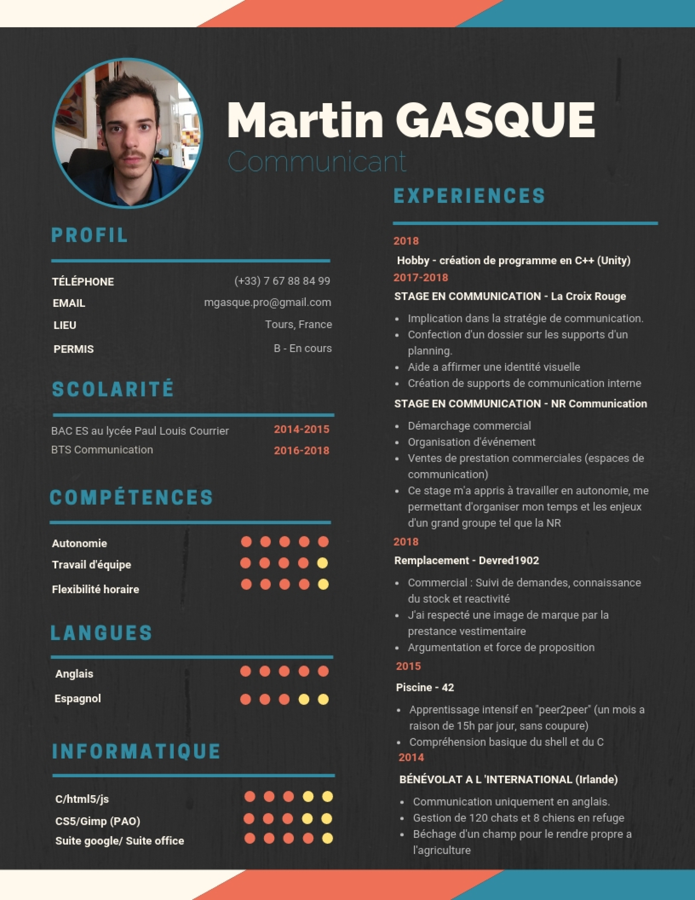

Alors comme ca, mon cas vous interesse ?
Avant toute chose...
Jetez un oeil à mon CV

Il est le résumé général de mon parcours
professionnel, c'est beaucoup de choses
utiles pour mes employeurs potentiels
Ensuite n'oubliez pas de...
Jeter un oeil à mes
projets du moments
Je cherche à
devenir programmeur afin de
pouvoir concilier la vie professionnelle avec
un domaine qui me plait.
J'ai toujours eue une passion pour l'éléctronique,
nottement à travers les jeux-vidéos.
C'est lors d'un test pour l'école "42BornToCode?"
que je me suis révéllé passioné pour le codage.
Mes principales qualitées
pour le développement sont:
Mes sources d'inspiration
Afin de réaliser ce site, je me suis inspiré de plusieurs autres sites
Netflix est pour moi un site réussi
Tout cela est pour moi une preuve d'une équipe ingénieuse et innovante

Openclassroom, un site magique permettant l'apprentissage à qui s'en donne la peine
C'est grâce à eux si j'ai pu faire ce site

Esthetiquement parlant, twitter est un maître de l'art.
Sa manière d'agencer les blocs pour en faire un espace clair et lisible est réellement à souligner
Je n'ai pas de compte et ne compte pas m'inscrire dans ce Stix
Mes loisirs
Jeux-Video
Les jeux-vidéos sont une véritable passion pour moi, autant culturelle que profesionnelle.
En effet, je suis très souvent attentif aux mécaniques mises en place et essai de reconnaitre l'agencement des fonctions lors de mes session de jeu. En vu de mon "hobby" principal, il me permet aussi de découvrir des manière de raconter une histoire et mettre un joueur/spectateur en immersion.
J'aspire a pouvoir travailler dans ce domaine

Cinema
Je regarde souvent séries et films, mais le genre que je parcours le plus reste les anime.
Plusieurs d'entre eux sont pour moi de véritables oeuvre d'art que chacun devrait regarder:
De par leur dynamisme et les expressions faciales des personnages, c'est certainement mon studio d'animation préféré
Une animation très particulière relevant une apocalypse biblique, animation de renom
Et les series les plus marquantes:
Un complot mondial pour réduire l'expansion humaine
Les crasses d'une ville américaine qui cultive la culture "ghetto"
Musique
Je ne sors jamais de chez moi sans musique.
Je pense pouvoir dire que je préfère les musiques éléctronique (Bitonal Landscape,Adhesive Wombat,TheFatRat)
Mais j'apprécie également des musique plus acoustiques comme le jazz des Vulfpeck ou le Hip-Hop de Jurrasic 5
Hobby
Le jdr (ou jeu de rôle pour les néophytes) est un jeu de société où l'on s'imagine des histoires respectant des régles permettant de jouer le rôle d'un personnage de notre création.
Il y a généralement plusieurs joueurs et un maître du jeu.
J'ai souvent pris la place du maitre du jeu, j'aime donc raconter des histoires et les mettre en place, en forme pour plonger mes joueurs dans mon monde.